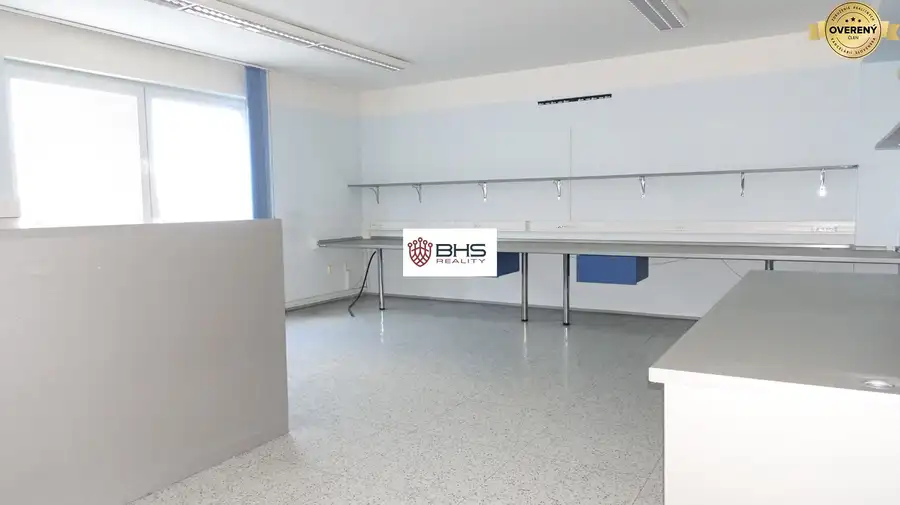
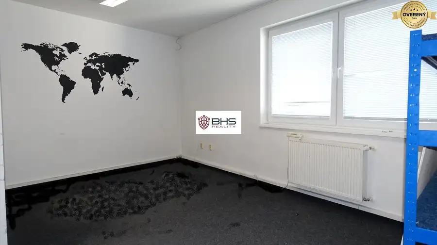
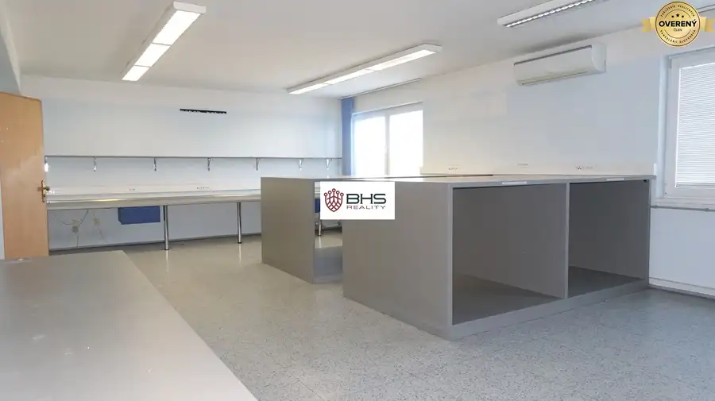
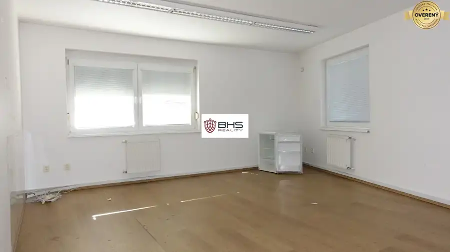
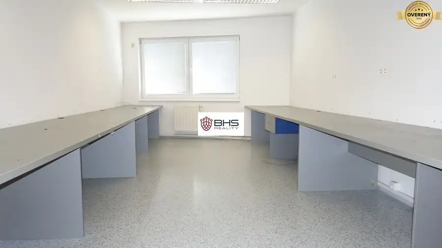
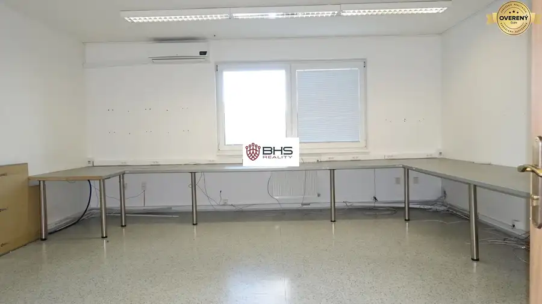
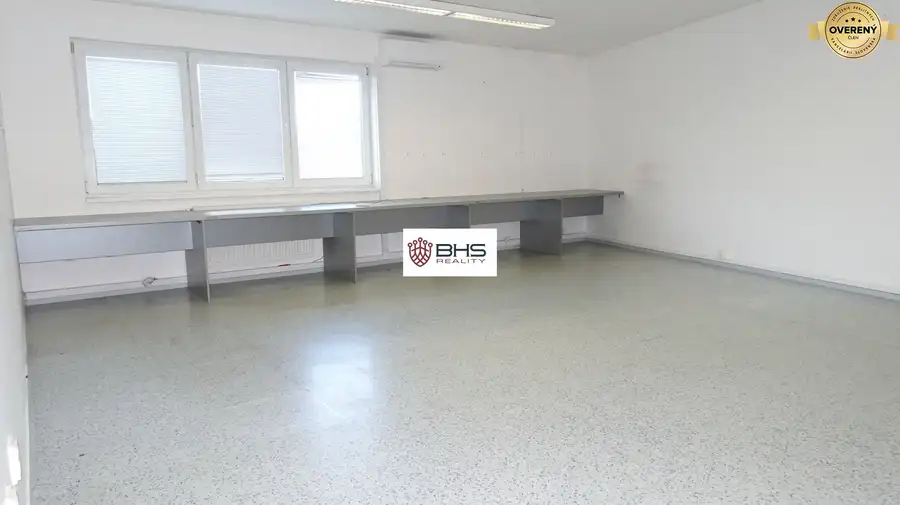
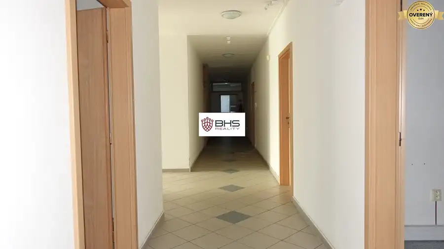

Prenájom – KANCELÁRIE a SKLADY (11 m2 až 260 m2), BA - Pod. Biskupice
Podunajské Biskupice, Bratislava








- Plocha25 m²
- Vlastníctvofiremné
O nehnuteľnosti
Realitná kancelária BHS Reality ponúka na PRENÁJOM kancelárie a sklady na Dvojkrížnej ulici v Bratislave II – Podunajských Biskupiciach, v dvoch administratívnych budovách.
Ide o zabezpečený areál, v ktorom sa nachádzajú tri budovy, A, B a C – pozri schému areálu v obrazových prílohách. Nachádzajú sa tu kancelárie rôznych dispozícií a výmer, od najmenších (11 m2) po najväčšie (93 m2), podľa požiadaviek zákazníka sa dajú priestory prispôsobiť presne na mieru, prípadne sa dá prenajať aj celé poschodie a podobne.
Areál troch budov – novostavieb je kompletne oplotený s dvomi rampami na diaľkové ovládanie, s možnosťou vyhradeného parkovania za poplatok, je možné aj voľné parkovanie pred areálom bez poplatku. V každej z budov je možné pripojiť sa na rýchly optický internet (od UPC, príp. Telekom-u), v budovách je nainštalovaný monitorovací kamerový systém, elektrický vrátnik a ESZ alarm systém. Vstup do areálu a budov 24/7.
Budova A – v tejto budove sa nachádzajú kancelárske priestory na troch poschodiach (II., III. a IV. NP – nadzemné podlažie) a skladovacie priestory na prízemí budovy (I. NP). Súčasťou „A“ budovy je nákladný výťah s nosnosťou 700 kg. Na každom poschodí sa nachádzajú sociálne zariadenia - kuchynka a toalety. Niektoré kancelárie už majú nainštalované klimatizačné zariadenie. Okrem kancelárií je možné si v budove „A“ prenajať aj vykurované skladovacie priestory, od 70 m2 do 260 m2 (sklady sú momentálne obsadené!).
Budova B – ponúka prenájom kancelárskych priestorov na dvoch poschodiach, na II.NP a III. NP. Výmery jednotlivých kancelárií sa pohybujú od 21 m2 do 32 m2, v prípade potreby je možné upraviť (zväčšiť) priestor spojením viacerých susediacich kancelárskych priestorov.
Budova C – (momentálne obsadená !) samostatná menšia administratívna budova vhodná pre jediného nájomcu. Priestory sa nachádzajú na dvoch podlažiach s výmerou 64 m2. Priestor na prízemí (32 m2) sa môže použiť ako kancelária alebo recepcia, je so sociálnym zázemím, na poschodí po schodisku sa nachádza horná kancelária (32 m2).
Cena za prenájom kancelárskych priestorov na 1., 2. a 3. poschodí je :
cena za 1m2 (bez klimatizácie) je 6,-€/m2/mes. + Energie 3,50€/m2/mes. + DPH.
cena za 1m2 (s klimatizáciou) je 6,-€/m2/mes. + Energie 4,08€/m2/mes. + DPH.
Cena za prenájom kancelárskych priestorov na prízemí je :
cena za 1m2 (bez klimatizácie) je 6,66€/m2/mes. + Energie 3,50€/m2/mes. + DPH.
cena za 1m2 (s klimatizáciou) je 6,66€/m2/mes. + Energie 4,08€/m2/mes. + DPH.
Cena za prenájom skladov.
Za 1m2 sa účtuje: 5,-€/m2/mes. + Energie 3,50€/m2/mes. + DPH.
Priestory sú k dispozícií ihneď, v obrazových prílohách sú zobrazené iba niektoré – vzorové kancelárie.
Kontakt: Iva Bedejová, , email:
© Popis nehnuteľnosti – text a obrazové prílohy sú majetkom a autorským dielom spoločnosti BHS Reality.
Parametre
- Úžitková plocha
- 25 m²
- Poschodie
- neuvedené
- Vlastníctvo
- firemné
- Status
- aktívne
- Výťah
- áno
- Parkovanie
- vnútorné
- Zariadenie
- nezariadený
- Bezbariérový prístup
- áno
- Okná
- plastové
- Novostavba
- áno
- Dátum zverejnenia
- 2020-12-02
Kde to je
Mohlo by Vás zaujímať
 Chaty a chalupyNové
149 900 €PREDAJ – celoročne obývateľná chata - Lazy p. Makytou, pozemok 353 m2
Lazy-pod-makytoucertov, Lazy pod MakytouČertov
3-izbový61 m²
Chaty a chalupyNové
149 900 €PREDAJ – celoročne obývateľná chata - Lazy p. Makytou, pozemok 353 m2
Lazy-pod-makytoucertov, Lazy pod MakytouČertov
3-izbový61 m²
 Rodinné domyNové
750 000 €PREDAJ – dva RD, 7-izb. a 2-izb., Dunajská Lužná, pozemok 966 m2
Dunajská Lužná
7-izbový537 m²
Rodinné domyNové
750 000 €PREDAJ – dva RD, 7-izb. a 2-izb., Dunajská Lužná, pozemok 966 m2
Dunajská Lužná
7-izbový537 m²
 PozemokNové
89 990 €PREDAJ – pozemok pre rodinný dom, 1.142 m2, H. Hámre, okr. Žarnovica
Horné Hámre
1142 m²
PozemokNové
89 990 €PREDAJ – pozemok pre rodinný dom, 1.142 m2, H. Hámre, okr. Žarnovica
Horné Hámre
1142 m²